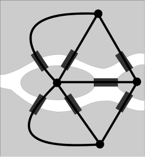

Par Etienne DELAY / @ElCep
crédit photo : Norlando Pobre sur Flickr
crédit photo : Steven Kay sur Flickr
crédit photo : yaph sur Flickr
La ville de Königsberg (aujourd'hui Kaliningrad) est construite autour de deux îles situées sur le Pregel et reliées entre elles par un pont. Six autres ponts relient les rives de la rivière à l'une ou l'autre des deux îles
Source : wikipedia
Une telle promenade n'existe pas, et c'est Euler qui donna la solution de ce problème en caractérisant les graphes que l'on appelle aujourd'hui « eulériens »
En théorie des graphes, on dit d'un graphe non-orienté qu'il est « eulérien »
Source : wikipedia
Née de l'hybridation des sciences sociales ET de la théorie de graphes (dont l'un des champs est l'analyse de réseaux)
La SNA propose un changement de perspective en Sciences Sociales. Au lieu de se concentrer sur les individus et leurs caractéristiques elle pousse l'observateur à se focaliser sur les relations entre les individus, les groupes, etc., ansi que les caractéristiques structurales qu'elles présentent.
« Un réseau social est constitué d'un ensemble d'unités sociales et de relations que ces unités sociales entretiennent les unes avec les autres, directement ou indirectement à travers des chaînes et des chemins relationnels de longueurs variables »
P. Mercklé (2015-2016)
On va parler de :
Moreno (1930) propose trois grands principes de représentation qui s’imposent dès le départ :
Huang, Chung-Yuan, Sun, Chuen-Tsai and Lin, Hsun-Cheng (2005). 'Influence of Local Information on Social Simulations in Small-World Network Models'. Journal of Artificial Societies and Social Simulation 8(4)8.
Quand vous en avez envie !
Les atouts
- Présentation réalisée avec reveal.js - Vous pouvez la retrouver sur github http://unil.im/RoY9B